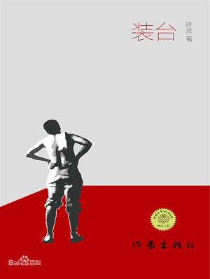

1.内容概括
本作品讲述了关于社会中一位底层人物——装台人刁顺子的日常生活琐事，详细刻画出了人与人之间、人与社会之间的相拉扯纠缠。“装台”指的是装备舞台。 在一些演出上演时，总需要有人搭台子、做布景，而装台干的就是这一行当。 只要有“舞台”，就有装台，舞台的定义有多广，装台的工作范畴也就多广。在作品中，刁顺子踏实肯干，带着几个兄弟承接各种演出装台的活。顺子有过三次婚姻，且每次婚姻的结局都是悲惨的。顺子在外面点头哈腰招揽生意，没日没夜地卖苦力赚钱，回家又得面对被女儿折腾得破乱不堪的家。最终顺子身边的人接连因忍受不了他刁蛮无理的大女儿而纷纷离开了这个家，而他对这一切都无能为力，只能被动接受。
刁顺子是作品的中心人物之一，而他实际上代表着边缘人的角色。根据巴特勒的理论来说，边缘人指的是于社会中占据岌岌可危位置的人，他们处在社会的角落，被社会中心位置的思想、追求和潮流所遗忘，甚至是被周围相似处境的人所鄙夷，属于社会建构中的被排挤者。
然而，即使是在边缘化的生活中，刁顺子也是家庭内主导性的人物。从这个角度来讲，刁顺子家庭内部的女性便处于边缘人的边缘状态——而这正是女性的非同质化体现。因此，交叉性便处处渗透于此作品中。首先从经济状况来讲，刁顺子和他的家庭就处于社会的最底层。其次，女性自身便作为弱势群体处于社会的底层地位。那么，在此基础上，刁顺子家庭中的女性成员则在双重打压的情况下生活得十分拘谨，经受着不同方面的压迫。
2.主要人物分析
——刁顺子：
刁顺子是一位非常典型的装台人，在社会中处于较低的地位，经常会被人看不起。但他认真负责处事十分圆滑，将装台生意做得远近闻名。然而，正是这样一位聪明工作者，家里却有着各种各样的鸡飞狗跳。他一共有过三次婚姻，第一个老婆抛弃了他留下女儿刁菊花，第二个老婆得癌症去世了，带过来一个女儿韩梅，第三房老婆蔡素芬漂亮温顺，却遭到自己容貌不佳、沦为大龄剩女的女儿菊花的百般刁难。心理扭曲的菊花把蔡素芬和大学放假回来的韩梅视为眼中钉，于是家里频频爆发“女人大战”，而他虽疲于应付又不得不照单全收。
然而，值得注意的是，在整部作品关于女性矛盾的叙述中，刁顺子始终都是一个隐身的角色，他逃避了解决家庭中女性矛盾的责任，每次都怀有息事宁人的态度，告诉妻子忍忍便过去了。从另一个角度来看，他擅用自己在家中的主导地位，自私的进行任何决定。他在没有告诉自己女儿的条件下，对孩子没有任何解释和交代，就领进了一个新的妻子。同时，他无视孩子的情感与心理需求，仅仅考虑自己的生理需求，强硬的限制孩子的想法，导致刁菊花变得蛮横无理。
作品花费了大量笔墨来描写女性矛盾，而深入分析我们便会发现，从家庭角度来看，实际上女性矛盾的根源便是男性的不作为——男性将自己隐藏在家庭关系中，抱着事不关己高高挂起的态度，只从自己的角度考虑——而这实质上反而更加会激化女性矛盾。而从社会角度来看，女性矛盾实质上是两性关系的不平等。女性们为了争夺在一个家庭中仅次于男性的话语权，便开始大打出手，这种两性的不平等不仅是女性矛盾的导火索，更是其内部的推进器。
——刁菊花：
刁菊花无疑是本作品中最不讨喜的角色，是一位十分极端的底层阶级女性。首先，她出身贫寒，母亲背叛父亲后将她丢下，这致使街坊邻居和亲朋好友都看轻刁大顺和她，让她从小生活在流言蜚语中。接着，由于刁大顺唯唯诺诺的性格和装台的工作，刁菊花也看不起父亲，认为自己的父亲只会点头哈腰、没有骨气。她长相丑陋，没有接受过良好的教育。随着她的母亲在她年幼时就离开后，缺乏母爱的她随着年龄增长变得越来越可恶——这就导致没有人愿意娶她，她因此变成了大龄剩女，心理更加扭曲，行事更加过分，言语更加刻薄。而由于她的原因，同父异母的妹妹韩梅离家出走，后妈蔡素芬也离开了刁大顺。归根到底，这一切其实都是她极度自卑的产物。
进一步来看，刁菊花的行为都是因为从小缺乏关爱所导致的。这种“爱”实质上也是一种社会建构的体现。由于出身的限制以及所在阶级的局限性，刁菊花始终生活在一个流言蜚语且利益至上的社会氛围中，接收不到基本的关怀和爱护，从而变得刁蛮可悲。
刁菊花在作品中被贴上了许许多多的标签，其中“大龄剩女”是最显著的一条。“大龄剩女”是源于中国的一个概念，从性别文化来讲，此标签的存在为了鼓励年轻的、不谙世事的女性早结婚早生育。而由于父权文化灌输的理念是，只有年轻女性是有性魅力的，是男性需要的性资源，因此“大龄剩女”的标签也是一种父权文化的体现。从历史和经济角度来看，它是改革开放以来的“父权制回潮”。当时由于“妇女回家”概念的流传，女性再次承担起家务和育儿的责任，把就业岗位留给男性。因此，男性占据经济发展的红利与资源，这也就从经济上巩固了父权制对女性的统治——“大龄剩女”的出现便是这种退步性的体现。总结来说，“大龄剩女”的出现其实是父权制将女性贬低为性和生育资源的一个文化建构，是广大舆论对于没有达到男权社会对女性的要求的女性所施以的惩罚，以规训的方式来对女性施加压力。
接着，在作品中还有很有意思的一点在于刁菊花的恋父情结。这种恋父情结不是情欲上的，而是社会身份上的。蔡素芬的出现威胁到了刁菊花家庭女主人的身份，这可能是刁菊花对蔡素芬敌意的根源。在传统家庭中，未嫁之女是一个尴尬的身份，因为她们无法在规定时间内走出父权家庭，与丈夫组建新的家庭。由于刁菊花的原生家庭没有母亲，所以她暂代了女主人的身份，但是新继母的到来使得她失去了这个地位。
最后，我们需要结合社会的文化规训来思考刁菊花的形象。刁菊花由于样貌不佳、身材走形成为了身边人的攻击对象，同时她由于自身出身贫寒还怀有着扭曲的性别观念及爱情观——她不在意男性女性是否平等，她仅仅关注于男方的长相与财力。在这之中很有趣的一点在于，由于自身长期遭受容貌的诋毁，她不仅没有培养出对于他人外貌的尊重，反而更加倾向于嫉妒辱骂面容姣好的人和歧视谩骂长相更加不堪的同伴。那么，深入思考，是怎样的一个社会才会对长相有如此苛刻的要求呢？长期统一化的审美标准和一代又一代宣传的流行样貌逐渐构建了整个社会的“美学”价值观——人们开始疯狂追求外表，以满足自己在社会中的存在感。而事实是，外表的标准时刻在随着社会大众审美和潮流的改变而改变，这种动态的社会建构产物在很大程度上摧残了许多像刁菊花一样的盲目追求者。除此之外，出身也似乎成为了性别意识偏差的重大原因。无论是基于传统的性别规训，还是大多数贫寒人家对于金钱的向往，孩子们从小都会受到诸如“大男子主义”类偏执性别观念的影响，从而在之后的生活中受其制约——这种后果的严重性不仅在于对其自身权利的破坏，尤其在于合理化错误的性别状态，从而影响到社会的进步。
——韩梅：
她是刁菊花同父异母的妹妹，也是刁家唯一一个大学生。她作为刁家的“后来者”，小心翼翼地生活着，不敢去忤逆刁菊花。她有一些清高，不愿意与农村人谈论未来，用尽一切努力想要走出现状并渴望成为一名城里人，从而摆脱自己“寄人篱下”的生活。对于家庭和母亲的怀念都寄托在从小就陪在她身边、与她相依为命的一只小狗“好了”，然而这只狗因菊花的妒忌心而被残忍杀死，最终韩梅无法忍受、离家出走，与菊花断绝往来。
——蔡素芬：
刁顺子的第三任妻子，漂亮温顺，满心都是丈夫和家庭，但长期遭到“大龄剩女”刁菊花的百般刁难，最终无奈离开了刁顺子。蔡素芬是一位典型且悲惨的“家庭妇女”形象，她满心都是丈夫和家庭，为了能够得到一个家庭而忍气吞声，终日陪着丈夫身边任劳任怨。但她是可怜的，由于出身的阴影，她渴望被爱，只要得到一点被爱的迹象便会不顾一切地投入进去，哪怕最终等待她的是遍体鳞伤。
蔡素芬在作品中的形象实质上是男性视角下的完美女性。她温顺持家，处处以丈夫的利益为首位，心甘情愿接受不平等的人格。比如说，在作品中有一个情景，蔡素芬在遭遇强暴后不告诉丈夫，仅仅是因为害怕给丈夫的尊严带来破坏。而她这样的做法其实是在内化“女性是丈夫私人所有物”的男权逻辑。进一步思考，在她所处的社会背景下，女性提升生活质量和阶级位置的唯一途径是靠丈夫，而这正是由于现实化且传统的男权社会长期以来对女性的规训。至此，我们便可以提出两个问题：“女性得到爱唯一的方式只有做贤妻良母吗？”“父权婚姻制度下的爱才是爱吗？”。如今看来，这两个问题的答案无疑是否定的，但在传统守旧的中国底层阶级眼里，答案便变得肯定了起来。基于长期的习俗引领和父权制欺压，男性地位处于女性之上已经成为了一个习惯性的标准，无论是男性还是女性都已经适应了这种建构，并将其视为自己的行为准则——这种构造的合理化则正是意图维持社会性别不公现状的最顽固力量之一。
3.作品中性别意识的局限性
（1）女性刻板印象
结合陈彦和乡土文学有关的所有作品，女性形象都可以被归为几大固定的类型——这可以被看作对于农村女性的偏见。首先会有一类“知青”形象的女性，她们思想开放，但后期会受到变故，使得人生道路发生改变。其次会出现一类多管闲事的女性形象。她们喜欢八卦，喜欢关心别人的琐事，啰啰嗦嗦、大大咧咧。接着会有一类“一心向夫君”的妇女形象。她们勤勤恳恳，生活里只有农作物、丈夫和孩子，哪怕她们被家暴被欺负，她们仍旧会陪伴在丈夫周围，心甘情愿成为丈夫的附属品。
（2）男性凝视
在这部作品中，男性凝视占据在各个细节中。无论是对于蔡素芬外貌的描写，还是小说里其他人物对于韩梅的评价，甚至是对于刁顺子的议论，都会聚集在女性的身材和面容上。除此之外，书中在提及刁菊花类的女性时，都要重点和蔡素芬的外貌加以对比，强调其他女性的普通甚至丑陋。而以上这些都是基于男性凝视之上的体现。
（3）激化女性内部矛盾
在这部作品中，作者花费了大量的笔墨来描写刁菊花与蔡素芬、韩梅与刁菊花、刁菊花与韩梅等等的女性矛盾，这些内容甚至占据了整部作品的主线。女性之间的矛盾、敌对、恶语相加从始至终贯穿全文，并且最终导致结局的悲惨性。这种对于同性间敌对的描写完全是建立在男性视角之上的——这种过于武断且绝对的妄想不仅是对于女性群体的不尊重，更是对于女性形象的恶意刻画。
（4）语言色彩单调且庸俗
作者在文章的写作中运用了大量粗俗且性意味浓厚的词句及语段，有些明明对于情节的发展起不到任何推波助澜的作用，但作者依旧平添许多性方面的内容。除此之外，对于这些性方面的描写，无一例外都体现着对于女性的贬低——无论是对于女性角度表现的描写还是男性对此事议论的方面来看，都充斥着对于女性的不尊重。
4.总结
《装台》在情节的跌宕起伏中塑造了一群生活在城市底层的边缘人物，他们因自身生存属性的边缘化，过着谨小慎微的生活，这些边缘人物并未作为弱势群体而被额外施加恩惠，城市生活在这群人身上呈现出更具普遍意义的苦难记忆。苦难赋予人们的不是逃避而是说服，人们一边缝合着伤口，一边将鲜血融入这座城市——平凡的人无法抵抗世界施加于个人身上的重压，滑稽的众生相背后是象征着生命存在的强烈欲望，可以说其对于社会和人性的刻画是十分深刻的。但与此同时，其对于性别认知的局限性也是十分显著的。
1.Content Summary
This work is about the daily life of Diao Shunzi, an underclass person in society, and portrays in detail the ties between people and culture. The word "stage" refers to equipping the stage. In some performances, there is always a need for someone to build the stage and make the set; the stage is this line of work. As long as there is a "stage," there is a stage, how broad the definition of the stage, how wide the scope of the work of the stage will be. In position, Diao Shunzi is down-to-earth, with a few brothers undertaking a variety of performances to install the stage work. Shunzi has had three marriages, and each one has ended tragically. Shunzi is out soliciting business, working day and night to earn money, and then he must come home to a home torn apart by his daughter. Eventually, the people around Shunzi leave the house one after another because they can't stand his brutal and unreasonable older daughter. He can do nothing about it but accept it passively.
Diao Shunzi is one of the central characters of the work, but he represents the role of the marginalized. According to Butler's theory, the marginalized are those who occupy a precarious position in society, in the corners of society, forgotten by the ideas, pursuits, and trends of the center of the community, and even despised by the people in similar situations around them, belonging to the excluded in the social construction.
Yet, even in her marginalized life, Diao Shunzi is the dominant figure within the family. From this perspective, the women within Diao Shunzi's family are on the margins of the marginalized - and this is a reflection of the non-homogeneity of women. Thus, intersectionality permeates the work. First, regarding economic status, Diao Shunzi and his family are at the bottom of the social ladder. Secondly, women are at the bottom of society as a disadvantaged group. Then, on this basis, the female members of Diao Shunzi's family live a very restricted life under double oppression and are subjected to different aspects of pressure.
2.Analysis of main characters
--Diao Shunzi.
Diao Shunzi is a typical pretender in a lower societal position and is often looked down upon. However, he is serious and responsible for dealing with very smooth, the loading business will be far from famous. However, it is such an intelligent worker, but the family has a variety of chickens and dogs. He had a total of three marriages, the first wife abandoned him, leaving his daughter Diao Juhua; the second wife died of cancer, bringing a daughter Han Mei; the third wife, Cai Sufen, was beautiful and docile, but of his poor appearance, reduced to an older daughter Juhua of all sorts of difficulties. The psychologically distorted Juhua sees Cai Sufen and Han Mei, who is back from university leave, as a thorn in his side. Hence, the family frequently breaks out in "women's wars," which he is overwhelmed with and has to accept fully.
However, it is worth noting that Diao Shunzi is always an invisible character in the entire narrative of women's conflicts. He avoids the responsibility of solving women's disputes in the family, and every time, he has the attitude of resting on his laurels, telling his wife to put up with it and pass. From another point of view, he takes advantage of his dominant position in the family and makes any decision selfishly. For example, he brought in a new wife without telling his daughter and without any explanation or account to the child. At the same time, he ignores the child's emotional and psychological needs, considers only his physical needs, and forcibly restricts the child's ideas, causing Diao Juhua to become brutal and unreasonable.
The work spends a lot of ink to depict female conflicts. Still, a deeper analysis reveals that from the family perspective, the root cause of female conflicts is male inaction - men hide in family relationships, with the attitude of not caring about their own business, only thinking from their perspective --which, in essence, intensifies female conflicts. From a social point of view, women's competitions are essentially about the inequality of gender relations. This inequality between the sexes is not only a trigger for women's conflicts but also an internal fuel.
--Diao Juhua.
Diao Juhua is undoubtedly the most unlikable character in this work, a very extreme bottom-class woman. First of all, she comes from a poor background, and her mother betrayed her father and left her behind, which caused neighbors and friends to despise Diao Dashun and her, making her live in gossip since childhood. Then, because of Diao Dashun's obsequious character and his job as a stage dresser, Diao Juhua also looked down on her father, believing that he only nodded and had no backbone. Furthermore, she was ugly and did not receive a good education. With her mother leaving when she was young, the lack of maternal love made her more and more hateful as she grew older - which led to no one wanting to marry her. She thus became a more senior, leftover girl, more psychologically distorted, acting more excessively and speaking more meanly. And because of her, her half-sister Han Mei ran away from home and her stepmother Cai Sufen left Diao Dashun. Ultimately, all of this is a product of her extremely low self-esteem.
Further, Diao Juhua's behavior is caused by a lack of love from childhood. This "love" is essentially a social construct. Due to her birth and class limitations, Diao Juhua has always lived in a gossipy and profit-oriented social atmosphere, receiving no primary care and love and thus becoming brutal and pathetic.
Diao Juhua has been labeled as many things in her work, with "older leftover girl" being one of the most prominent. "In terms of gender culture, this label exists to encourage young, uneducated women to get married and have children early. The label of "older leftover women" also manifests patriarchal culture since patriarchal culture instills the idea that only young women are sexually attractive and a sexual resource for men. Furthermore, from a historical and economic point of view, it is a "return to patriarchy" since the reform and opening up. Due to the concept of "women going home," women once again took over the responsibility of housework and childcare, leaving jobs to men. As a result, men took over the dividends and resources of economic development, which economically reinforced patriarchal dominance over women - the emergence of the "older woman" reflects this regressive nature. In conclusion, the emergence of the "older woman" is a cultural construction of the patriarchy's relegation of women to a sexual and reproductive resource, a punishment imposed by public opinion on women who do not meet the requirements of a patriarchal society, and a way to exert pressure on women by way of discipline.
Another interesting point in the work is Diao Juhua's father's obsession. This patriarchal complex is not erotic but social identity. The emergence of Cai Sufen threatens Diao Juhua's status as the matriarch of her family, which may be the source of Diao Juhua's hostility toward Cai Sufen. In traditional families, unmarried daughters are an awkward status because they cannot get out of the patriarchal family and form a new family with their husbands within a specified period. Since Diao Juhua's family of origin has no mother, she temporarily takes the position of the matriarch, but the arrival of her new stepmother makes her lose this status.
Finally, we need to think about the image of Diao Juhua in the context of the cultural discipline of society. Diao Juhua is the target of attacks due to her poor appearance and body shape, and she also has a distorted view of gender and love due to her poor background - she does not care about the equality of men and women; she only focuses on the looks and wealth of the man. The interesting point is that, due to her long history of being denigrated for her appearance, she not only fails to develop respect for the formation of others but also tends to be more jealous of those who are good-looking and discriminate against those who are even worse-looking. So, what kind of society does it have such harsh requirements for looks? Long-term uniform aesthetic standards and generations of popular watches have gradually built up the "aesthetic" values of society - people have become crazy about their appearance to satisfy their sense of existence in the community. The truth is that the standards of appearance change all the time as the aesthetics and trends of social change, and this dynamic social construction has largely destroyed many blind seekers like Diao Juhua. In addition, origin also seems to be a major cause of gender consciousness bias. Whether based on traditional gender norms or the desire for money in most low-income families, children are influenced from an early age by bigoted gender concepts such as "machismo" and are subjected to them later in life - the consequences of which are serious. The seriousness of the consequences lies not only in the destruction of their rights but also in the rationalization of the wrong gender status, which affects the progress of society.
-- Han Mei.
She is the half-sister of Diao Juhua and the only college student in the Diao family. As a "latecomer" to the Diao family, she lives carefully, not daring to disobey Diao Juhua. She is a bit noble, unwilling to talk about the future with the rural people, and makes every effort to get out of the status quo and aspires to become a city dweller to escape her "subservient" life. However, the dog is cruelly killed because of Juxia's jealousy, and eventually, Han Mei can't stand it and runs away from home, cutting off contact with Juhua.
-- Cai Sufen.
Diao Shunzi's third wife, beautiful and docile, full of love for her husband and family, has long been subjected to the difficulties of Diao Juhua, the "old lady," and finally left Diao Shunzi without a choice. She is a typical and miserable "housewife" who is full of her husband and family and she has to put up with her husband to get a family, and she is always by his side. But she is pitiful; because of the shadow of her origins, she desires to be loved and will throw herself into it at the slightest sign of love, even if she will end up with bruises.
The image of CHOY So-fen in her works is essentially the perfect woman from the male perspective. She is meek and family-oriented, always putting her husband's interests first and willingly accepting an unequal personality. For example, there is a scene in the work in which Chua So-fen does not tell her husband after a rape simply because she is afraid of damaging his dignity. She is internalizing the male logic that "women are the private property of their husbands. On further reflection, in her social context, the only way for women to improve their quality of life and class position is to rely on their husbands. I mentioned the situation due to the long-standing discipline imposed on women by the realistic and traditional patriarchal society. At this point, we can ask two questions: "Is the only way for women to be loved by being a good wife and mother?" "Is love under patriarchal marriage the only way to be loved?". Today, the answer to these two questions is undoubtedly no, but in the eyes of the traditional and old-fashioned Chinese underclass, the answer becomes certain. Based on long-standing customs and patriarchal oppression, the position of men over women has become a conventional standard, and both men and women have adapted to this construct and regard it as their code of conduct - the rationalization of this construct is one of the most stubborn forces intended to maintain the status quo of gender injustice in society.
3.Limitations of gender consciousness in the works
(1) Female stereotype
In all of Chen Yan's works related to vernacular literature, the female stereotype can be categorized into several fixed types, which can be regarded as prejudice against rural women. First, there is a category of "youth" women, who are open-minded, but later suffer from changes and change their path. Secondly, there will be a category of nosy women. They like gossiping and caring about other people's trivial matters, nagging, and big-hearted. Then there will be a category of women who are "devoted to their husbands." Even if they are bullied by domestic violence, they will still be with their husbands and willingly become their husbands' appendages.
(2) Male Gaze
In this work, the male gaze occupies all the details. Whether it is the description of Cai Sufen's appearance, the comments of other characters in the novel about Han Mei, or even the discussion of Diao Shunzi, they all gather on the female figure and face. In addition, when mentioning women of the Diao Juhua category, the book contrasts with Cai Sufen's appearance, emphasizing other women's ordinary and even ugly appearances. And all of these are based on the embodiment of the male gaze above.
(3) Intensifying the internal conflicts of women
In this work, the author spends a lot of ink describing the female conflicts between Diao Juhua and Cai Sufen, Han Mei and Diao Juhua, Diao Juhua and Han Mei, etc. These contents even occupy the main line of the whole work. The contradictions, hostility, and lousy language between women are present throughout the entire work and ultimately lead to the tragic ending. This depiction of same-sex hatred is entirely based on the male perspective. This overly arbitrary and absolute delusion is disrespectful to the female community and malicious to the portrayal of women.
(4) Monotonous and vulgar language
The author uses a lot of vulgar and sexually explicit words and phrases in writing, some of which do not contribute to the development of the plot, but the author still adds a lot of sexual content. In addition, these sexual descriptions, without exception, reflect the degradation of women - both the report of the female perspective and the male discussion of the matter is full of disrespect for women.
4.Summary
In the ups and downs of the plot, "The Dressing Table" portrays a group of marginal characters living at the bottom of the city, who live a cautious life due to their marginalized existence, and these marginal characters are not given extra favors as a disadvantaged group. On the contrary, suffering gives people not escape but persuasion, as they sew up their wounds while integrating their blood into the city - ordinary people are unable to resist the pressure the world imposes on them, and behind the comical appearance of the multitude is a strong desire to symbolize the existence of life, which can be said to be a profound portrayal of society and human nature. But at the same time, the limitations of its gender perception are also very significant.